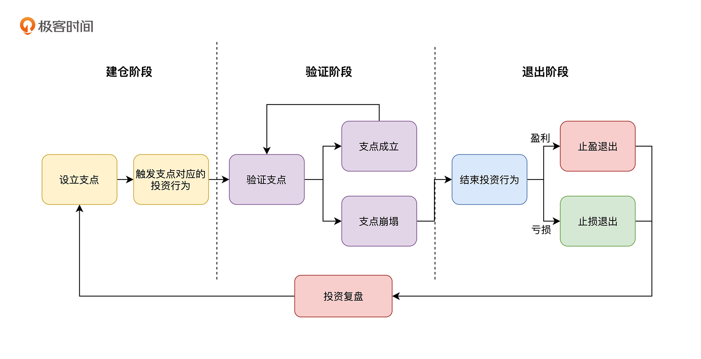
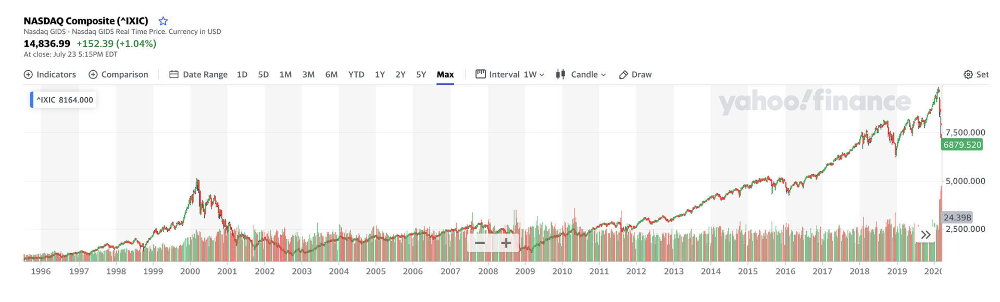
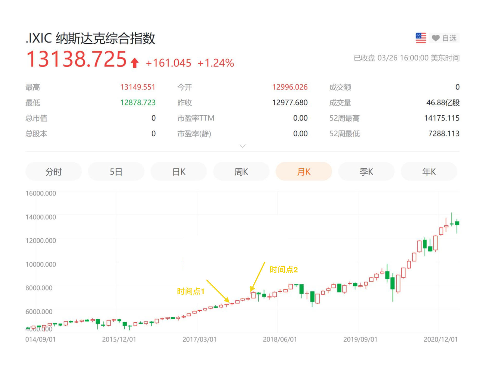
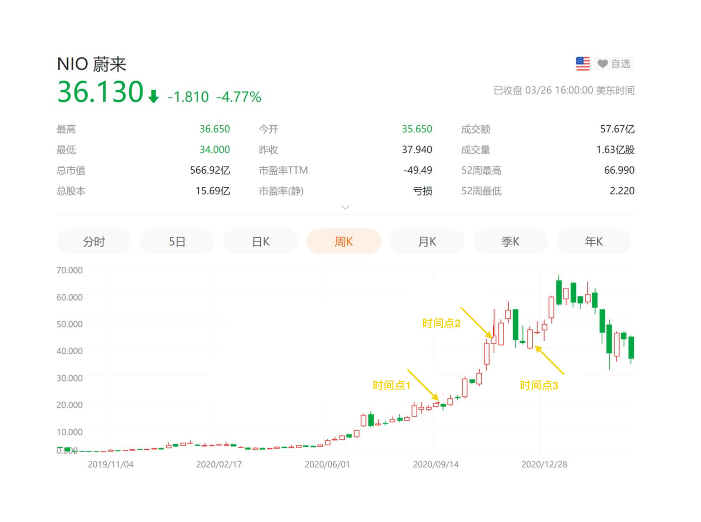
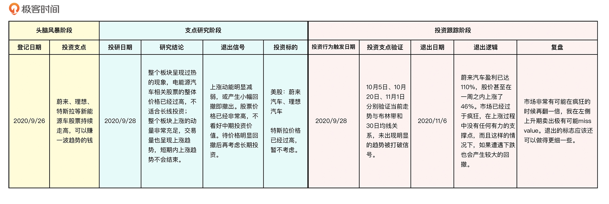
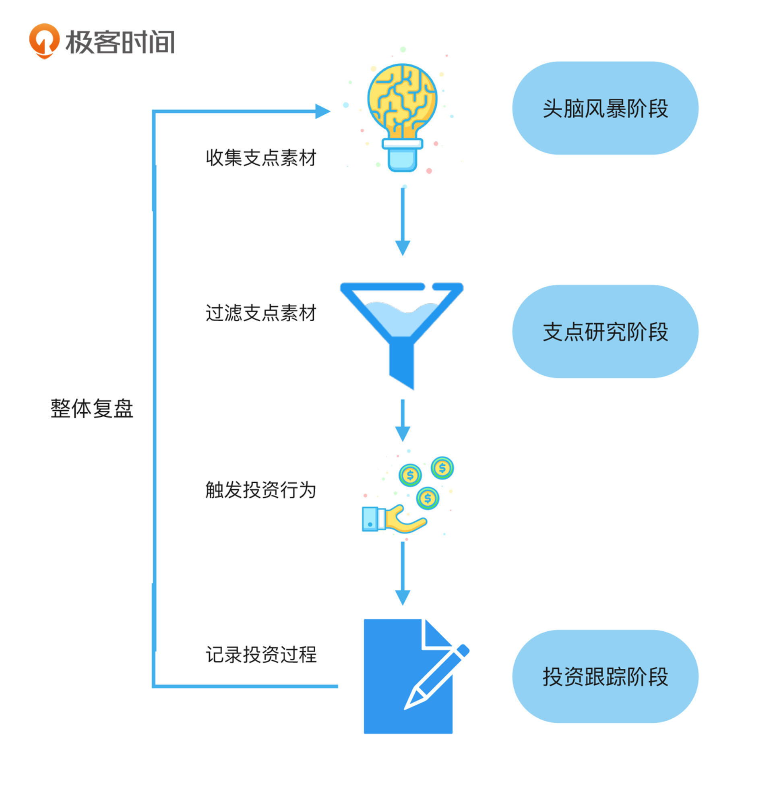

- 00 开篇词 为什么说程序员最适合学财富管理？.md
- 01 财富框架：建立属于你自己的财富双塔.md
- 02 个人发展：你自己的发展才是最大的财富源泉.md
- 03 理财金字塔：如何建立稳固的投资理财结构？.md
- 04 实战知识：有哪些收益稳健的经典资产配置组合？.md
- 05 支点投资法：主动投资是讲逻辑的！.md
- 06 不当韭菜：在财富管理的过程中摆正心态，知己知彼.md
- 07 职业方向：如何选择一个有前景的职业方向？.md
- 08 职业规划：大公司VS小公司，怎样选择更有前途？.md
- 09 期权股权：如何正确处理公司的期权、股权？.md
- 10 跳槽涨薪：如何规划一条合理的职业道路？.md
- 11 财富拓展：35岁失业？程序员如何拓宽财富渠道？.md
- 12 房产投资：如何做出理性的买房决策？.md
- 13 实战知识：让我们编程计算下怎么还房贷最合适.md
- 14 基金投资：如何让专业人士帮你赚钱？.md
- 15 实战知识：如何选出一只优质的基金？.md
- 16 股票投资：最适合散户的股票投资方法是什么？.md
- 17 投资闭环：如何成为越来越专业的投资者？.md
- 18 技术优势：程序员如何用技术超越其他投资者？.md
- 19 量化投资：典型的量化投资系统都包含哪些模块？.md
- 20 价值投资：永远不过时的中长期投资策略.md
- 21 趋势跟踪：怎样跟着趋势一起赚钱？.md
- 22 轮动策略：如何踩准市场变换的节奏？.md
- 23 对冲思想：这个世界上有稳赚不赔的生意吗？.md
- 24 多因子模型：整合不同策略，形成合力的顶层框架.md
- 25 机器学习：我们能用机器学习来建立投资模型吗？.md
- 26 量化实战：从0到1搭建起一套简单的量化投资系统（上）.md
- 27 量化实战：从0到1搭建起一套简单的量化投资系统（下）.md
- 番外一 王喆对话李腾：程序员对基金经理的灵魂十问（上）.md
- 番外三 有哪些能够持续学习的参考资料和相关网站？.md
- 番外二 王喆对话李腾：程序员对基金经理的灵魂十问（下）.md
- 番外四 知识总结：这门课的全部思维导图.md
- 答疑课堂（一） 财富框架篇、个人发展篇思考题集锦.md
- 答疑课堂（二） 投资实战篇、投资进阶篇思考题集锦.md
- 结束语 知行合一：财富管理是一生的事情.md
17 投资闭环：如何成为越来越专业的投资者？
你好，我是王喆。今天我们要聊一聊投资理财过程中的一个重要问题：如何面对失败，并在失败中学习、成长。
在之前的投资实战课程中，我给出的都是成功的案例。可能你一直想问：老师，难道你的投资全都是成功的吗？你是不是选择性地只给我们讲成功案例啊？
这是非常好的疑问，能提出这样的问题，就证明你不是一个迷信权威、盲目跟随的人。所有成功的投资者都不是天生的，都需要经历一次又一次的失败，才能够逐渐成长，我当然也不例外。我的投资经验，包括这门课的所有知识，都是在大量的失败之后总结出的。但只经历失败是没有价值的，成功的关键在于，你能不能把失败的经验融入到你的投资体系中去。
今天我就来讲一讲，如何建立一个投资闭环，让你能够吸收失败的经验，成为越来越专业的投资者。
如何建立投资闭环？
谈到建立投资闭环，我们的第一步就是搭建一个投资体系，否则知识根本就无从沉淀。好在我们的投资体系早在 05讲 就搭建好了，那就是“支点投资法”。
不过，之前介绍的支点投资法是开放式的，针对的是独立的一次投资。为了建立投资闭环，我们需要对它进行一个小小的改造，就是在退出阶段之后加上“投资复盘”的环节（如图1）。我们不仅要复盘这次投资中成功的经验，还要复盘失败的经验，让它们都沉淀到你的投资体系里。

你应该还记得，我在 05讲 的最后留过一道这样的思考题：“一个掌握支点投资法的新手，和一个成熟运用支点投资法的大神，他们的主要差距会是什么呢？”我想，现在的你应该清楚地知道这个问题的答案了：他们的区别就在于会不会进行有效复盘。
要知道，大家一开始都是普通人，没有人天生是大神。但是，后者通过有效复盘，无论是在经验、知识上，还是在心态、认知上，都会每日精进，而前者往往只能原地踏步。长此以往，差距越拉越大。这些差距会对支点投资法的具体应用产生决定性的影响，包括所选择支点的质量、验证支点时的准确度和退出投资时的果断程度等。
好，大道理我们就不多说了，接下来让我们聚焦在“投资复盘”这个最有价值的环节上，看两个典型的复盘案例。
失败案例：“美股做空失败”的投资复盘
我首先要分享的是我四年前的一个失败案例。简单描述一下这个投资过程：我从2017年10月到2018年2月，分两次购买了三倍杠杆做空纳斯达克指数的ETF，SQQQ。但到2018年8月为止，累计亏损超过了40%，最终亏损退出。
接下来，我会给你详细描述从设立支点，到触发投资行为，最后止损退出的全过程，然后进行投资复盘。
设立支点
首先是投资支点的设立。我们让时间回到2017年，当时的投资大环境是这样的：2008年的金融危机之后，美股从2009年起开始逐渐走牛，已经经历了长达8年的长牛无明显回撤的走势。在2017年，美股涨幅更是屡创新高，特别是更多代表科技股的纳斯达克指数，2017年的涨幅更加惊人。
但是，根据超过50年的历史统计数据，美股的牛市周期一般都在6到10年，典型的就是1991年到2000年的牛市周期，以及2002年到2008年的牛市周期（可参考图2）。超过10年的牛市周期几乎没有出现过。那么，从2009年到2017年，牛市已经走过8个年头，而且还屡创新高，这是不是一个长期投资做空的合适支点呢？于是，把这个非常宏观的经济周期作为投资支点，我选择了做空纳斯达克指数。

投资行为
在这个投资支点的支撑下，我在2017年10月，也就是图3中的时间点 1 买入了三倍杠杆，做空纳斯达克指数的ETF，SQQQ。并且，我在美股持续走高的时间点2，也就是2018年2月，持续买入了SQQQ。

退出行为
时间来到了 2018年8月，纳斯达克指数在短暂下跌后再破新高，我的SQQQ投资已经累计亏损40%以上，严重超出了我的心理止损线和风险承受能力。而且，从中长期趋势上看，美股的上涨趋势线完好，没有被打破的迹象，于是我最终选择止损卖出，亏损42.7%。
投资复盘
很明显，这是一个失败的投资案例，但是在复盘过这次投资后，我发现我的收获可能远远超过了损失的金钱。我把当时的复盘结果原封不动地贴在了下面，跟你分享。
我分析了这次投资失败的原因，主要有两个。
首先，投资支点的选择存在根本性的问题。设立做空支点远比设立底部做多支点困难，因此，如果没有极强的做空信号，不要进行任何做空交易。
选择三倍杠杆是投资失败的次要因素。杠杆的加入，大幅增加了投资风险，让我因为风险承受能力的问题，不得不提前退出。事实上，如果没有杠杆，我完全有可能坚持到美股2018年11月到2019年1月的下跌波段。所以，使用杠杆交易要极端慎重。
然后，我再次反思了做空操作的合理性。
在任何市场进行做空行为，对手方都是市场的大多数人，甚至包括政府在内的绝对力量。而且，由于通货膨胀、经济增长等宏观要素的存在，做空本质上不是一个“跟时间做朋友”的操作。所以，不管在任何市场，做空思想对散户来说都是极难掌握的。最后再次强调，如果没有极强的做空信号，不要进行任何做空交易。
成功案例：“蔚来汽车”的投资复盘
对于失败的案例，我们要复盘失败原因，汲取经验，那么成功的案例就不用复盘了吗？当然不是的。对于成功案例，我们仍然要通过复盘，分析两个问题：
- 这次交易挣到钱，靠的到底是运气，还是正确的支点选择和验证执行？
- 整个过程中的微操是否有可以改进的地方？
至于具体的复盘过程，接下来我会用我投资蔚来汽车的成功案例进行说明。
设立支点
如果你关注过2020年的股市，就一定知道，那一年无论是美股还是A股，新能源概念股票都经历了一轮暴涨。整个板块行情的触发点在2019年底，那时特斯拉扭亏为盈，然后领涨，随后整个板块整体性上涨。
时间来到2020年9月，一批美股市场的新能源中概股，比如蔚来汽车、理想汽车、小鹏汽车等，都进入了强势的上涨行情。而且，经过快一周的观察仓跟踪，我发现无论从交易量、资金流动趋势，还是股价趋势来看，几只新能源中概股都呈现着加速上涨的趋势。
经过持续观察，以及对近半年来走势的分析，我得出了下面的结论：
- 整个板块呈现过热的现象，电能源汽车相关股票的整体价格已经过高，不适合长线投资；
- 整个板块上涨的动量非常充足，交易量也呈现上涨趋势，短期内上涨趋势不会结束。
基于上面的投资支点，我决定进行一波中短期的趋势操作。
投资行为
这次交易，我选择的投资标的是新能源中概股的龙头蔚来汽车。我在2020年9月29日（图4中的时间点1）以每股21美元的价格买入，之后不断观察蔚来汽车的走势，验证投资支点是否存在，来判断什么时候退出。
退出行为
2020年11月6日，蔚来汽车这只股票的盈利已达110%，股价甚至在一周之内上涨了46%。市场已经过于疯狂，在上涨过程中没有任何有力的支撑点，而且这样的情况下，如果遭遇下跌也会产生较大的回撤。
这时候（图4中的时间点2），当初进行趋势操作的投资支点面临极大的崩溃风险，于是我选择了止盈卖出。

投资复盘
这次投资行为结束后，我也在第一时间进行了复盘。总体来讲，这波操作还是非常成功的，是一次经典的赚取市场情绪价值的趋势操作。
一个很明显的感受是，我自己的投资心态有了很大进步。比如，我没有因为错过初期新能源行情而后悔，也没有因为希望赚取最后一个铜板而贪婪。但是，在投资过程中，我仍然有需要反思的地方，主要就是在退出时机的选择上。
有句俗话叫“让利润奔跑”，在市场陷入疯狂的时候，我觉得最好的方案可能就是跟着它继续疯，一直等到疯狂结束，出现一个明显的回撤，这时候再收割所有的利润。所以，在下次进行类似操作的时候，我会选择在图4中的时间点3卖出。虽然这个点和时间点2的价格几乎相等，但却能完整地享受到市场疯狂的收益。
市场疯狂时，任何情况都有可能出现。比如，假设我在时间点2卖出之后，蔚来汽车的股价又翻了一倍呢？因此，在左侧上升期卖出有很大可能会miss value。反思之后，我得出了这样的认知：下次做趋势操作的时候，还应该进行更多的试验，体会不同的卖出时机选择。
上面就是我针对投资失败和投资成功两个经典案例的复盘过程。你可以看到，这整个过程是对你的支点选择、投资心态、投资行为的完整回顾。实战是最好的老师，只要建立了复盘的习惯，我相信每个人的投资水平都会突飞猛进。
我们如何建立一张投资跟踪表？
讲完了投资复盘的两个案例，我相信你也明确了建立投资闭环的重要性，但你可能会问：投资复盘到底应该怎么做？
其实，要进行投资复盘，是有一套非常切实可行的方法的，那就是建立投资跟踪表。这也是我跟李腾在管理自营基金时持续使用的方法。你不用依赖于任何投资App或者专业网站，只需要会用Excel表格就够了。
简单来说，投资跟踪表就像一个漏斗一样，把你的投资想法一层层过滤成可投资的支点，再记录下从投资到退出的整个过程，最后针对整个过程进行复盘。
接下来我们详细讲讲。投资跟踪表主要分为“头脑风暴阶段”“支点研究阶段”和“投资跟踪阶段”三大部分。具体形式你可以参照图5，下面，先来听我介绍下每个阶段吧。

第一个阶段是“头脑风暴阶段”，主要负责记录你发现的任何可能的投资机会。这些机会可能是你自己在观察熟悉的投资标的时发现的，可能是你在跟同事朋友讨论时得出的，也可能是你看了一篇文章，或者听了某位专家介绍，觉得有道理而记下的。总之，只要你有新的投资想法，都要新开一条记录，不用管这个想法靠不靠谱，因为这个阶段的目的就是为你积累大量的支点素材。
第二个阶段是“支点研究阶段”。这个阶段的目的是把你非常粗糙的支点素材打磨成一个可行的投资行为。它就像一个漏斗，把不靠谱的，或者你认为优先级不高的支点素材过滤掉。
在图5中，我针对“银行地产行业被低估”这一支点素材，进行了一些投资分析，查阅了房地产行业的PE、历史估值分位数、基本面等数据，最终确认可以开始对应的投资行为。当然，如果通过研究，你发现自己的支点站不住脚，就应该把这个支点停止在研究阶段，不要进一步触发实质的投资行为。
第三个阶段就是实际执行的“投资跟踪阶段”，我们应该根据支点投资法，详细记录投资行为触发和退出的时间，以及触发退出的逻辑。并且，在一切都尘埃落定之后，复盘整个投资过程，把复盘的关键点记录下来，供之后进行投资时参考。

为了方便你建立自己的投资跟踪表，我把我使用的跟踪表加入到了GitHub项目中，你可以从 这个目录 下载后直接使用。
最后想说的是，如果你真的坚持使用投资跟踪表，记录你的所有投资过程，你会发现自己正在写一本专属于你自己的理财书。这本书的厉害之处在于，它是最适合你的，你对每一处的细节了如指掌，每看一条记录，就会发现当时的心态、思考、行为都历历在目。
我相信，这一定会让你受益无穷。如果你能够坚持下来，记录到第10条的时候，就能切实地感受到自己的进步；记录到第50条的时候，就会和我一样，有在财富管理赛道上“升了一级”的感觉。所以，希望你能真正地尝试起来，并且坚持下去。
小结
今天这一讲，是一堂理论加实战的课程。我讲解了建立投资闭环的方法，分享了自己做投资复盘的两个典型例子，然后详细介绍了创建投资跟踪表的方法。最后，我再总结下今天的重点知识，你一定要再温习一遍：
- 建立投资闭环，就是在原来支点投资法的流程中加上复盘环节。
- 长期进行有效复盘的投资者，和从不进行复盘的投资者，在支点投资法的具体应用上有着决定性的差距。
- 我的复盘结论之一：除非有极强的做空信号，否则散户不要去碰做空交易。
- 我的复盘结论之二：要在市场疯狂的时候让利润奔跑，选择合适的退出时机。
- 投资跟踪表分为头脑风暴阶段、支点研究阶段、投资跟踪阶段三大部分，坚持使用它会帮助你成为越来越专业的投资者。
最后需要补充一句，这一讲涉及的股票仅用于举例说明，不构成任何购买建议。
思考题
在讲投资跟踪表的“头脑风暴阶段”这部分时，我提到投资支点可以来自某位专家的介绍，也可以来自于跟同事朋友的讨论。但是，我们在 06讲 中纠正投资误区的时候，明明讲过不要盲从专家的意见。你觉得这两点是不是前后矛盾了？为什么？
欢迎你在留言区与我交流讨论，我们下一讲见。
© 2019 - 2023 Liangliang Lee. Powered by gin and hexo-theme-book.